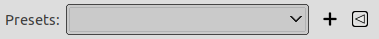

In this section, you will find help for commands in the menu, which contains commands that affect the color of the image.
![[Note]](images/note.png)
|
Note |
|---|---|
|
Besides the commands described here, you may also find other entries in the menu. They are not part of GIMP itself, but have been added by third-party plug-ins. You can find information about the functionality of a plug-in by referring to its documentation. |
The GEGL based filters in the menu have several options in common. Some of these options are only shown under certain conditions.
- Presets
-

Presets give you a quick way to select previously saved settings for the filter you are using. If you have saved presets before, you can select them from the list, or else you can save the current settings by pressing the button.
The
 button opens the Preset menu
which lets you Import Current Settings from File or
Export Current Settings to File,
and gives you access to Manage Saved Presets.
button opens the Preset menu
which lets you Import Current Settings from File or
Export Current Settings to File,
and gives you access to Manage Saved Presets.
- Input Type
-
Note The input type drop-down list is only visible when a selection is active, and the filter allows choosing the input.
-
Use the selection as input If this option is selected, the filter only uses pixels inside the selection as input for the filter.

-
Use the entire layer as input If this option is selected, the input of the filter is the entire layer. The output will only affect the selection. The layer outside the selection remains unchanged.

-
- Clipping
-
Note The clipping drop-down list is only visible when the current layer has an alpha channel, no selection is active, and the filter operation can change the layer size.
This setting determines what to do when the result of this filter is larger than the original layer.
-
Adjust The layer will be automatically resized as necessary when the filter is applied. This is the default.
-
Clip The result will be clipped to the layer boundary.
-
- Blending Options
-
When you expand this option by clicking , you can choose the blend Mode to be used when applying the filter, and the Opacity. These work the same as the layer blending options.
- Preview
-
When this option is enabled (default), changes in the filter settings are directly displayed on canvas. They are not applied to the image until you click the button.
- Merge filter
-
By default, GEGL filters are applied non-destructively as layer effects, which means they can still be changed at a later time. When you want to apply the filter immediately to the layer itself, you can enable this option.
See Using Layer Effects for more details.
This option is remembered, so you only need to change it once if you prefer to always use filters destructively.
- Split view
-
When this option is enabled, the view of the image is divided in two parts. On the left side it shows the effect of the filter applied, and on the right side it shows the image without filter.
Note You can click-and-drag the line that divides the preview to move it, and Ctrl-click to make the line horizontal, or to switch it back to vertical.